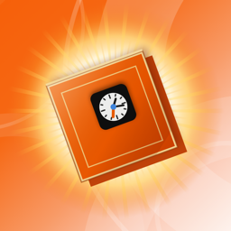

SMASH BOX App Storeスマッシュボックスは何も収集しません。
アカウントの作成はなく、解析も、広告も、いかなるトラッキングもありません。当方に対するネットワーク通信は一切行いません。通信する相手となるサーバーが当方に存在しないためです。
ベストスコア、実績、選んだテーマ、振動の設定が、お使いの端末に保存されます。以上がすべてです。
iCloud にサインインしている場合、ベストスコアと実績は Apple の iCloud キーバリューストアにコピーされ、ご自身の端末のあいだで引き継がれます。このデータはお客様の Apple ID に紐づく iCloud アカウント内にあります。当方はこれを見ることも、取得することもできません。iOS の設定でスマッシュボックスの iCloud をオフにすれば停止します。その場合もゲームはこれまでどおり、その端末のなかだけで動作します。
スマッシュボックスは、年齢を問わず誰からもデータを収集しません。
アプリを削除すると、その端末に保存されていたものはすべて消えます。同期されたコピーも消す場合は、削除する前に iOS の設定でスマッシュボックスの iCloud をオフにしてください。
このポリシーを変更した場合は、新しい日付とともにこのページに掲載します。
このポリシーに関するお問い合わせ：nashcraft1@gmail.com